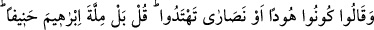
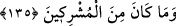

Diğer bir hadiste de Allah Rasûlü: “Kim ihlâslı bir şekilde ‘Allah’dan başka tanrı
yoktur.’ derse cennete girer.”[29] der. “Ey Allah’ın Rasûlü, İhlâs nedir?” denilince:
“Allah’ın haramlarından uzak durmaktır.” buyurmuştur. O halde ihlâs, her ne kadar
Allah’ın bir lütfu ise de, elde edilmesinin iyi amellere bağlı olduğu da bir gerçektir.
İyi insanlarla kan bağının hiçbir faydası yoktur, kişinin ameli bozuk oldukça. Nitekim
bir şâir şöyle söyler:
Kişinin kökü temizse dalları da hoştur.
Âdet-i ilâhiyye’dendir ki, ölüden diri, diriden ölü çıkar.
Bir Farsça şiirde şöyle denmiştir:
Soy ve nesebe o kadar itibar edilmez.
Gülün, gülen yüzü diken sâyesinde değildir.
Şarap koruktan, şeker kamıştan olur.
Bal ise arının kusuntusundan hâsıl olur.
Güzel kokusu her yana yayılan öd ağacı esas itibariyle diğerleri gibi bir ağaçtır. Fakat
hammadde açısından bu hâle müsâid olduğu için belli işlemlerden sonra güzel bir koku
olmuş, diğer ağaçlara üstünlük sağlamış ve böylece kök itibariyle bağlı olduğu cinsten
ayrılmıştır. Misk de aynen böyledir, çünkü onun aslı da kandır. Öyle kimseler vardır ki,
aslına tam aksi bir gelişim gösterirler.
Bir kimsenin babası fâsık, kötü yolda birisi olsa bile, babasının genlerinde gizli
bulunan iyi özellikler onda baskın çıkabilir ve o kimse iyi bir kişi olabilir. Bir
başkasının babası iyi bir kimse olsa, yine onun genlerinde gizli bulunan kötü özellikler,
çocuğunda baskın gelebilir ve o da kötü bir kimse olabilir. “Deliden veli, veliden deli
doğabilir.” Nice çocuklar vardır ki, babalarına ancak bir yönden benzerler. Âdem
(a.s.)’ın hâline, oğulları Habil ile Kabil’in hâline ve kıyâmete kadar onlardan sonra
gelenlerin hâline bu açıdan bir bakalım.
135. (Yahûdîler ve Hıristiyanlar müslümanlara:) Yahûdî ya da Hıristiyan olun ki,
doğru yolu bulasınız, dediler. De ki: Hayır! Biz, hanîf olan İbrâhîm’in dinine uyarız.
O, müşriklerden değildi.
“Ya Yahûdî ya da Hıristiyan olunuz ki sapıklıktan kurtulup doğru yolu bulasınız.”
âyet-i celîlesi, Medine’deki Yahûdîler’in ileri gelenleriyle Necran hıristiyanları’nın
ileri gelenleri hakkında nâzil olmuştur.
Yahûdîler: “Yahûdî olunuz, çünkü bizim peygamberimiz Mûsâ, peygamberlerin en